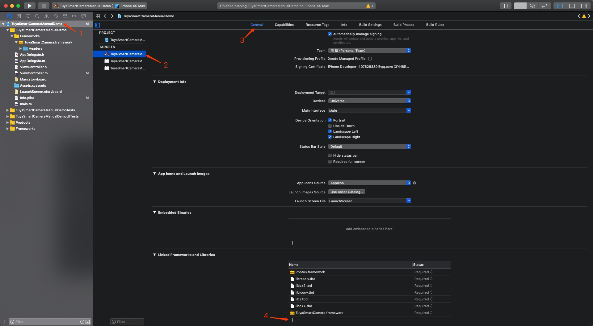

Manual Integration
Click HERE to download SDK. After adding TuyaSmartCamera.framework in project category, the porject category like below:
Then choose project related target, under general setting, add system dependencies to "Linked Frameworks and Libraries", the required dependencies are: "Photos.framework", "libresolv.tbd", "libbz2.tbd", "libiconv.tbd", "libz.tbd", "libc++.tbd". like below:

Then switch to "Build Settings", enter "other linker" in the search box, and add "-ObjC" in "Other Linker Flags", like below：